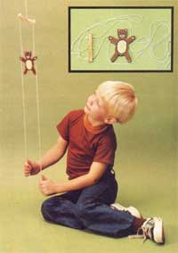

Here's an old-time folk toy that MOTHER-staffer Emerson Smyers has made for his children and grandchildren ... and which you can whip up in a jiffy for any of the "little people" on your Christmas list.
Everyone who makes one of these climbing bears (or-depending on your taste-monkeys, cats, dogs, squirrels, or people) seems to make 'em a different way, so don't get yourself too stove up trying to exactly duplicate the toy you see here. As long as you do the one critical thing right (drill the holes through the bear's paws at the proper angle), almost any size and shape animal cut from almost any thickness of shop scrap will work.
A SINGLE CAUTION: If you construct one of these climbin' critters for a very little person (only, say, two or three years old) ... make it small and from a lighter piece of wood. That way, it won't hurt if it hits the tyke in the head when he or she lets the toy drop from the top of its climb back down to the bottom.
OK. With that precaution out of the way, you're ready to doodle up a bear or monkey or whatever on a sheet of paper and transfer it to a scrap of leftover board down in the shop (anything from 3/8" to 3/4" thick seems to work fine). Draw the animal from, say, three inches to six inches tall-depending on the size of the child you intend to give it to-and saw it out.
Now comes the one critical part: The holes through the bear's paws must be drilled at approximately a 45° angle (the closer to 45°, the better) ... and not "straight up and down", the way some folks try to drill them.
The size of the holes isn't nearly as critical ... as long as the hard-braided cotton cord which goes through them will slip through the openings easily enough to allow the bear to slide back down the strings once you've made it climb to the top. The bear shown here climbs ordinary heavyduty cotton packaging cord that we happened to have lying around MOTHER's shop ... and the 5/32" holes we drilled in the animal's paws seem to work just fine.
Decorate your bear with non-toxic (remember, little folks tend to chew their toys sometimes) paint and thread 45 to 50 inches of twine through each of its paws. Tie a couple of knots in-or fasten a large bead to-the tail end of each string so the animal won't come off ... and secure the tops of the cords through the ends of the little yoke you see in the photos. A third "hanging" string is then fastened through the center of the yoke ... and you're ready to play.
Tie the center string to anything handy that's high enough to hold the bottoms of the "working" cords at a comfortable height. Then just pull first one and then the other ... and watch that bear climb those mini-ropes! When the animal reaches the top, relax your grip on the strings ... and Bruno will slide right back down, all ready for another trip to the heights.
|
|
 |
|